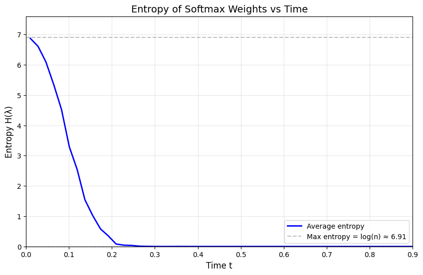
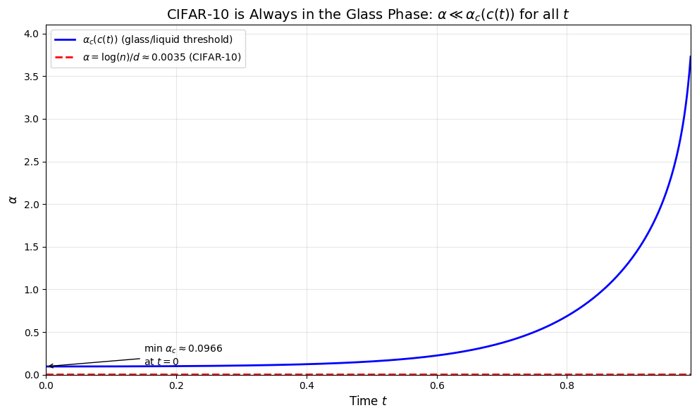
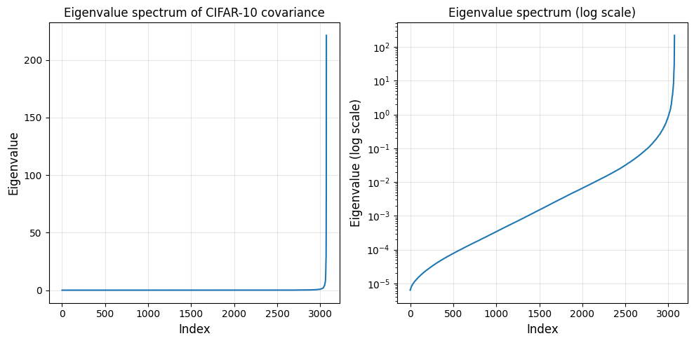
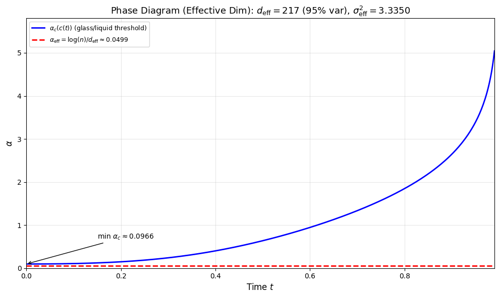
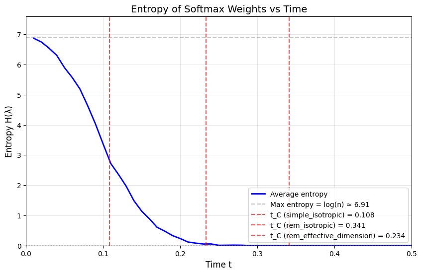
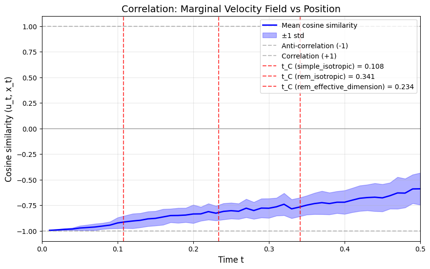

# =============================================================================
# Import libraries
# =============================================================================
import torch
from torchvision import datasets, transforms
import numpy as np
import matplotlib.pyplot as plt
from scipy.optimize import brentq
from scipy.special import softmax
from pathlib import Path
from scipy.optimize import minimize_scalarLet us briefly review the framework of flow matching. In flow matching, we aim to learn a velocity field \(u_t(x)\) that transports samples from a noise distribution to the data distribution. A central phenomenon in this process is velocity field collapse: at a certain critical time \(t_C\), the marginal velocity field becomes dominated by a single training example, effectively making it singular.
Key question: When does this collapse happen?
The timing of the collapse is determined by a fundamental parameter: \[ \alpha = \frac{\log n}{d} \] where \(n\) is the number of training samples and \(d\) is the data dimension. For CIFAR-10, \(n = 50,\!000\) and \(d = 3 \times 32 \times 32 = 3072\), yielding \(\alpha \approx 0.0035\).
Note: For computational efficiency, we use \(n = 1000\) samples for most experiments instead of the full \(n = 50,\!000\). This brings \(\alpha\) to approximately \(0.00225\), although the observed collapse times remain very similar.
This notebook investigates:
- The empirical entropy of the softmax weights, to observe when collapse occurs in practice
- Isotropic models for computing \(t_C\) analytically, under the assumption of uniform variance
- Non-isotropic models making use of the full eigenvalue spectrum of the data covariance
- The discrepancy between theoretical predictions and empirical observations
- Effective dimension corrections to reconcile theory and experiment
Additionally, we explore the relationship between the marginal velocity field and the position field.
In [1]:
In [2]:
# =============================================================================
# CIFAR-10 Default Parameters
# =============================================================================
CIFAR10_D = 3072 # Dimension (3 * 32 * 32)
CIFAR10_N = 50000 # Number of training samples
CIFAR10_SIGMA2 = 0.24 # Per-coordinate variance after normalization
CIFAR10_ALPHA = np.log(CIFAR10_N) / CIFAR10_D # ~0.0035In [3]:
def load_cifar10_data_numpy(n_samples: int | None = 1000) -> np.ndarray:
"""
Load CIFAR-10 training data with standard normalization.
Parameters
----------
n_samples : int
Number of samples to load (use smaller for faster computation)
Returns
-------
np.ndarray
Data array of shape (n_samples, 3072)
"""
transform = transforms.Compose([
transforms.ToTensor(),
transforms.Normalize((0.5, 0.5, 0.5), (0.5, 0.5, 0.5)),
])
dataset = datasets.CIFAR10(
root="./data",
train=True,
download=True,
transform=transform
)
# Stack selected samples into array
if n_samples is None:
data = torch.stack([dataset[i][0].view(-1) for i in range(len(dataset))], dim=0).numpy()
else:
indices = np.random.choice(len(dataset), size=min(n_samples, len(dataset)), replace=False)
data = torch.stack([dataset[i][0].view(-1) for i in indices], dim=0).numpy()
return dataEntropy of the Softmax Weights
The marginal velocity field can be written as a weighted sum over training points: \[u_t(x) = \sum_{i=1}^{n} \lambda_i(x, t) \frac{x^{(i)} - x}{1 - t}\]
where the softmax weights are defined as: \[\lambda_i(x, t) = \frac{\exp\left(-\frac{\|x - t x^{(i)}\|^2}{2(1-t)^2}\right)}{\sum_{j=1}^{n} \exp\left(-\frac{\|x - t x^{(j)}\|^2}{2(1-t)^2}\right)}\]
To measure the “spread” of these weights, we compute the Shannon entropy: \[H(\lambda) = -\sum_{i=1}^{n} \lambda_i \log \lambda_i\]
Expected behavior:
- At \(t \approx 0\): All weights are approximately equal (\(\lambda_i \approx 1/n\)), so \(H \approx \log(n)\) (maximum entropy)
- At \(t \approx t_C\): One weight dominates (\(\lambda_i \approx 1\) for some \(i\)), so \(H \approx 0\) (minimum entropy)
The entropy drop marks the collapse transition where the velocity field becomes dominated by a single training point.
In [4]:
def compute_lambda_weights(x_t: np.ndarray, data: np.ndarray, t: float) -> np.ndarray:
"""
Compute the softmax weights lambda_i(x_t, t).
lambda_i(x, t) = softmax(-||x - t*x^(i)||^2 / (2*(1-t)^2))
Parameters
----------
x_t : np.ndarray
Current position, shape (d,) or (batch, d)
data : np.ndarray
Training data, shape (n, d)
t : float
Time in [0, 1)
Returns
-------
np.ndarray
Softmax weights, shape (n,) or (batch, n)
"""
if t >= 1.0:
raise ValueError("t must be < 1")
if t == 0:
# At t=0, all weights should be equal
n = data.shape[0]
if x_t.ndim == 1:
return np.ones(n) / n
else:
return np.ones((x_t.shape[0], n)) / n
# Compute scaled means
scaled_data = t * data # (n, d)
# Handle batch dimension
if x_t.ndim == 1:
x_t = x_t[np.newaxis, :] # (1, d)
squeeze = True
else:
squeeze = False
# Compute squared distances: ||x_t - t*x^(i)||^2
# x_t: (batch, d), scaled_data: (n, d)
diff = x_t[:, np.newaxis, :] - scaled_data[np.newaxis, :, :] # (batch, n, d)
sq_distances = np.sum(diff**2, axis=2) # (batch, n)
# Compute log weights (negative energies)
log_weights = -sq_distances / (2 * (1 - t)**2)
# Apply softmax along the n dimension
weights = softmax(log_weights, axis=1)
if squeeze:
return weights[0]
return weights
def compute_entropy(weights: np.ndarray) -> float:
"""
Compute the entropy of a probability distribution.
H = -sum_i p_i * log(p_i)
Parameters
----------
weights : np.ndarray
Probability weights (should sum to 1)
Returns
-------
float
Entropy value
"""
# Avoid log(0) by filtering out zero weights
mask = weights > 1e-300
if not np.any(mask):
return 0.0
p = weights[mask]
return -np.sum(p * np.log(p))
def compute_entropy_vs_time(
data: np.ndarray,
n_samples: int,
t_values: np.ndarray,
seed: int | None = None,
) -> np.ndarray:
"""
Compute the average entropy of lambda_i(x_t, t) over time.
For each t, draw samples x_t = (1-t)*x_0 + t*x_1 where:
- x_0 ~ N(0, I_d)
- x_1 is uniformly sampled from data
Then compute average entropy of the softmax weights.
Parameters
----------
data : np.ndarray
Training data, shape (n, d)
n_samples : int
Number of samples to average over
t_values : np.ndarray
Time values to evaluate
seed : int, optional
Random seed for reproducibility
Returns
-------
np.ndarray
Average entropy at each time value, shape (len(t_values),)
"""
if seed is not None:
np.random.seed(seed)
n, d = data.shape
entropies = np.zeros(len(t_values))
for i, t in enumerate(t_values):
if t >= 1.0:
entropies[i] = 0.0
continue
entropy_samples = []
for _ in range(n_samples):
# Sample x_0 from N(0, I_d)
x_0 = np.random.randn(d)
# Sample x_1 uniformly from data
idx = np.random.randint(n)
x_1 = data[idx]
# Compute x_t
x_t = (1 - t) * x_0 + t * x_1
# Compute weights
weights = compute_lambda_weights(x_t, data, t)
# Compute entropy
entropy_samples.append(compute_entropy(weights))
entropies[i] = np.mean(entropy_samples)
return entropiesIn [5]:
def plot_entropy_vs_time(
data: np.ndarray,
n_samples: int = 100,
t_values: np.ndarray | None = None,
t_max: float = 0.9,
seed: int | None = 42,
figsize: tuple[float, float] = (10, 6),
) -> None:
"""
Plot entropy of lambda_i(x_t, t) vs time.
The entropy should be high (close to log(n)) for small t when weights
are spread across many data points, then decrease rapidly around the
collapse time as weights concentrate on a single point.
Parameters
----------
data : np.ndarray
Training data, shape (n, d)
n_samples : int
Number of samples to average over at each time
t_values : np.ndarray, optional
Time values to evaluate. If None, uses linspace(0.01, t_max, 50)
t_max : float
Maximum time value (default 0.5)
seed : int, optional
Random seed for reproducibility
figsize : tuple
Figure size if creating new figure
"""
if t_values is None:
t_values = np.linspace(0.01, t_max, 50)
# Compute entropy
entropies = compute_entropy_vs_time(data, n_samples, t_values, seed=seed)
fig, ax = plt.subplots(figsize=figsize)
# Plot entropy
ax.plot(t_values, entropies, 'b-', linewidth=2, label='Average entropy')
# Add reference lines
n = data.shape[0]
max_entropy = np.log(n)
ax.axhline(y=max_entropy, color='gray', linestyle='--', alpha=0.5,
label=f'Max entropy = log(n) ≈ {max_entropy:.2f}')
ax.axhline(y=0, color='gray', linestyle=':', alpha=0.5)
ax.set_xlabel('Time t', fontsize=12)
ax.set_ylabel('Entropy H(λ)', fontsize=12)
ax.set_title('Entropy of Softmax Weights vs Time', fontsize=14)
ax.legend(loc='best')
ax.grid(True, alpha=0.3)
ax.set_xlim([0, t_max])
ax.set_ylim([0, max_entropy * 1.1])
plt.savefig("output/cifar10_entropy_vs_time.png")
plt.show()In [6]:
data = load_cifar10_data_numpy(1000)
plot_entropy_vs_time(data)
Observations:
The entropy drops sharply between \(t \approx 0.1\) and \(t \approx 0.3\). This indicates that:
- The softmax weights transition from being spread across many training points to concentrating on a single point
- The empirical collapse time lies in the range \(t_C^{\text{empirical}} \in [0.1, 0.3]\)
The theoretical collapse times we compute in the following sections should match this empirically observed transition.
Collapse Time in the Isotropic Case
In the isotropic case, we assume the data covariance is a scalar multiple of the identity matrix: \(C = \sigma^2 I_d\). For CIFAR-10, the per-coordinate variance is \(\sigma^2 \approx 0.24\).
Key quantities
The time-dependent energy scale is: \[c(t) = \frac{1}{2}\left(1 + 2\sigma^2 \frac{t^2}{(1-t)^2}\right)\]
This controls the variance of the bulk energy distribution.
Two methods for computing \(t_C\)
1. Simple heuristic formula: Based on comparing typical bulk energy to planted energy: \[t_C^{\text{heuristic}} \approx \frac{\sqrt{\alpha/\sigma^2}}{1 + \sqrt{\alpha/\sigma^2}}\]
2. Full REM/LDP framework: The collapse criterion uses the rate function \(I(\varepsilon)\) for the chi-squared distribution: \[\alpha = I(\varepsilon_g) = \frac{1}{2}\left(\log(2c(t_C)) + \frac{1}{2c(t_C)} - 1\right)\] where \(\varepsilon_g = 1/2\) is the planted energy density.
In [7]:
def compute_c(t: float, sigma2: float) -> float:
"""
Compute the time-dependent energy scale c(t).
c(t) = (1/2) * (1 + 2*sigma^2 * t^2 / (1-t)^2)
Parameters
----------
t : float
Time in [0, 1)
sigma2 : float
Per-coordinate variance of the data
Returns
-------
float
The energy scale c(t)
"""
return 0.5 * (1 + 2 * sigma2 * t**2 / (1 - t)**2)
def compute_collapse_time_simple_isotropic(alpha: float, sigma2: float) -> float:
"""
Compute the collapse time using the simple heuristic formula.
This is based on comparing typical bulk energy to planted energy:
t_C^{heuristic} ≈ sqrt(alpha/sigma^2) / (1 + sqrt(alpha/sigma^2))
Parameters
----------
alpha : float
The dimensionless ratio log(n)/d
sigma2 : float
Per-coordinate variance of the data
Returns
-------
float
The predicted collapse time
"""
ratio = np.sqrt(alpha / sigma2)
return ratio / (1 + ratio)
def compute_collapse_time_rem_isotropic(alpha: float, sigma2: float, tol: float = 1e-10) -> float:
"""
Compute the collapse time using the REM/LDP framework (isotropic case).
Solves the equation:
alpha = (1/2) * (log(2*c(t_C)) + 1/(2*c(t_C)) - 1)
where c(t) = (1/2) * (1 + 2*sigma^2 * t^2 / (1-t)^2)
This is derived from setting eps_g = 1/2 in I(eps_g) = alpha,
where I is the rate function for the chi-squared distribution.
Parameters
----------
alpha : float
The dimensionless ratio log(n)/d
sigma2 : float
Per-coordinate variance of the data
tol : float
Tolerance for the root-finding algorithm
Returns
-------
float
The predicted collapse time
"""
def equation(t):
c = compute_c(t, sigma2)
return 0.5 * (np.log(2 * c) + 1 / (2 * c) - 1) - alpha
# Find root in (0, 1) using Brent's method
# Start from a small value to avoid division by zero
t_low = 1e-6
t_high = 1 - 1e-6
# Check if solution exists in range
f_low = equation(t_low)
f_high = equation(t_high)
if f_low * f_high > 0:
# If no sign change, check which boundary is closer
if abs(f_low) < abs(f_high):
return t_low
else:
return t_high
return brentq(equation, t_low, t_high, xtol=tol)In [8]:
def plot_alpha_c_vs_time(
n_points: int = 500,
t_max: float = 0.99,
figsize: tuple = (10, 6),
) -> None:
"""
Plot the critical entropy threshold α_c(c(t)) across time.
Shows that for CIFAR-like α ≪ 1, we have α ≪ α_c(c(t)) for all t ∈ [0,1),
meaning the system is always in the glass phase.
The critical threshold is:
α_c(c) = (1/2) * (log(1 + 2c) - 2c/(1 + 2c))
where c(t) = (1/2) * (1 + 2σ² t² / (1-t)²)
Parameters
----------
sigma2 : float
Per-coordinate variance of the data (default: CIFAR-10 value)
alpha : float
The dimensionless ratio log(n)/d (default: CIFAR-10 value)
n_points : int
Number of time points to plot
t_max : float
Maximum time value (should be < 1 to avoid singularity)
figsize : tuple
Figure size
"""
# Time array
t_values = np.linspace(0, t_max, n_points)
# Compute c(t) for each time
c_values = np.array([compute_c(t, CIFAR10_SIGMA2) for t in t_values])
# Compute α_c(c(t)) using the formula:
# α_c(c) = (1/2) * (log(1 + 2c) - 2c/(1 + 2c))
def alpha_c(c):
return 0.5 * (np.log(1 + 2*c) - 2*c / (1 + 2*c))
alpha_c_values = alpha_c(c_values)
# Create figure
fig, ax = plt.subplots(figsize=figsize)
# Plot α_c(c(t))
ax.plot(t_values, alpha_c_values, 'b-', linewidth=2,
label=r'$\alpha_c(c(t))$ (glass/liquid threshold)')
# Plot horizontal line at α
ax.axhline(y=CIFAR10_ALPHA, color='r', linestyle='--', linewidth=2,
label=fr'$\alpha = \log(n)/d \approx {CIFAR10_ALPHA:.4f}$ (CIFAR-10)')
# Formatting
ax.set_xlabel(r'Time $t$', fontsize=12)
ax.set_ylabel(r'$\alpha$', fontsize=12)
ax.set_title(r'CIFAR-10 is Always in the Glass Phase: $\alpha \ll \alpha_c(c(t))$ for all $t$', fontsize=14)
ax.set_xlim(0, t_max)
ax.set_ylim(0, max(alpha_c_values) * 1.1)
ax.legend(loc='upper left', fontsize=10)
ax.grid(True, alpha=0.3)
# Add annotation showing the minimum gap
min_alpha_c = np.min(alpha_c_values)
min_idx = np.argmin(alpha_c_values)
t_at_min = t_values[min_idx]
ax.annotate(
fr'min $\alpha_c \approx {min_alpha_c:.4f}$' + '\n' + fr'at $t=0$',
xy=(t_at_min, min_alpha_c),
xytext=(0.15, min_alpha_c + 0.02),
fontsize=10,
arrowprops=dict(arrowstyle='->', color='black', lw=1)
)
plt.tight_layout()
plt.savefig("output/cifar10_alpha_c_vs_time.png")
plt.show()In [9]:
plot_alpha_c_vs_time()
Observations:
- For CIFAR-10, we have \(\alpha \ll \alpha_c(c(t))\) for all \(t \in [0, 1)\)
- This means the system is always in the glass phase
What is the glass phase?
The Random Energy Model (REM) framework distinguishes two phases:
- Liquid phase (\(\alpha > \alpha_c\)): Many bulk states have energies comparable to the planted state. The partition function is dominated by an extensive number of configurations.
- Glass phase (\(\alpha < \alpha_c\)): The planted state has much lower energy than typical bulk states. Only one (or very few) configurations contribute to the partition function.
For CIFAR-10, we are deep in the glass phase, which simplifies the collapse time computation. The critical threshold is: \[\alpha_c(c) = \frac{1}{2}\left(\log(1 + 2c) - \frac{2c}{1 + 2c}\right)\]
In [10]:
t_c_simple_isotropic = compute_collapse_time_simple_isotropic(CIFAR10_ALPHA, CIFAR10_SIGMA2)
t_c_rem_isotropic = compute_collapse_time_rem_isotropic(CIFAR10_ALPHA, CIFAR10_SIGMA2)
print(f"Collapse time (simple isotropic): {t_c_simple_isotropic:.6f}")
print(f"Collapse time (REM/LDP isotropic): {t_c_rem_isotropic:.6f}")Collapse time (simple isotropic): 0.108052
Collapse time (REM/LDP isotropic): 0.341177Now, let us extend this to the non-isotropic case.
Eigenvalues of the Data Covariance Matrix
To extend the analysis to the non-isotropic case, we need the eigenvalues \(\{\mu_k\}_{k=1}^d\) of the empirical covariance matrix \(C\) of the CIFAR-10 data.
Why eigenvalues matter:
- In the isotropic model, all eigenvalues are equal: \(\mu_k = \sigma^2\)
- Real image data has a spiked spectrum: a few large eigenvalues capture most of the variance
- This changes the energy landscape and affects the collapse time prediction
What we expect for CIFAR-10:
- Natural images are highly structured, so the covariance is far from isotropic
- Most variance should be captured by the top few principal components
- This leads to an effective dimension \(d_{\text{eff}} \ll d\)
In [11]:
cifar10_cov_eigs_path = "output/cifar10_cov_eigs.txt"
def compute_eigenvalues() -> np.ndarray:
# 1. Load CIFAR-10 with normalization
transform = transforms.Compose([
transforms.ToTensor(),
transforms.Normalize((0.5, 0.5, 0.5), (0.5, 0.5, 0.5)),
])
dataset = datasets.CIFAR10(root="./data", train=True, download=True, transform=transform)
n = len(dataset)
d = 3 * 32 * 32
# 2. Stack all images into [n, d]
X = torch.stack([dataset[i][0].view(-1) for i in range(n)], dim=0) # shape [n, 3072]
# 3. Empirical mean
mu = X.mean(dim=0) # [d]
# 4. Center
Xc = X - mu # [n, d]
# 5. Empirical covariance (3072 x 3072)
C0 = (Xc.T @ Xc) / n # [d, d]
# 6. Largest eigenvalue
# For d=3072 you can do full eig, or use symeig for symmetric matrices
eigs = torch.linalg.eigvalsh(C0).numpy() # sorted eigenvalues
# 7. Save eigenvalues
np.savetxt(cifar10_cov_eigs_path, eigs)
return eigs
if Path(cifar10_cov_eigs_path).exists():
eigs = np.loadtxt(cifar10_cov_eigs_path)
else:
eigs = compute_eigenvalues()In [12]:
# Plot eigenvalue spectrum of CIFAR-10 covariance matrix
plt.figure(figsize=(10, 5))
# Subplot 1: All eigenvalues
plt.subplot(1, 2, 1)
plt.plot(eigs, linewidth=1.5)
plt.xlabel('Index', fontsize=12)
plt.ylabel('Eigenvalue', fontsize=12)
plt.title('Eigenvalue spectrum of CIFAR-10 covariance', fontsize=12)
plt.grid(True, alpha=0.3)
# Subplot 2: Log scale to see the full range
plt.subplot(1, 2, 2)
plt.semilogy(eigs, linewidth=1.5)
plt.xlabel('Index', fontsize=12)
plt.ylabel('Eigenvalue (log scale)', fontsize=12)
plt.title('Eigenvalue spectrum (log scale)', fontsize=12)
plt.grid(True, alpha=0.3)
plt.tight_layout()
plt.savefig("output/cifar10_eigenvalues.png")
plt.show()
Observations:
The empirical covariance matrix of CIFAR-10 has a highly spiked spectrum:
| Statistic | Value |
|---|---|
| Mean eigenvalue \(\bar{\mu}\) | \(\approx 0.248\) |
| Eigenvalue range | \([6.3 \times 10^{-6}, 221]\) |
| Ratio \(\mu_{\max}/\bar{\mu}\) | \(\approx 893\times\) |
Effective dimension at different variance thresholds:
| Variance Captured | \(d_{\text{eff}}\) | Fraction of \(d\) |
|---|---|---|
| 90% | 99 | 3.2% |
| 95% | 217 | 7.1% |
| 99% | 658 | 21.4% |
Key insight: The mean eigenvalue \(\bar{\mu} \approx 0.248\) is very close to the isotropic \(\sigma^2 = 0.24\), but the eigenvalue spectrum spans 8 orders of magnitude. This extreme heterogeneity will significantly affect the non-isotropic collapse time prediction.
Collapse Time in the Non-Isotropic Case
When the data covariance \(C\) has eigenvalues \(\{\mu_k\}\) that are not all equal, we use the Gärtner-Ellis theorem (a generalization of large deviation principles) to compute the collapse time.
Time-dependent effective eigenvalues
At time \(t\), the effective covariance of the bulk energy distribution has eigenvalues: \[\lambda_k^{(t)} = 1 + \frac{2t^2}{(1-t)^2} \mu_k\]
Scaled log-moment generating function
\[\Lambda_t(\theta) = \frac{1}{d}\sum_{k=1}^{d} \left(-\frac{1}{2}\log(1 - \theta\lambda_k^{(t)})\right)\]
This is well-defined only for \(\theta < 1/\lambda_{\max}^{(t)}\), which becomes increasingly restrictive as \(t\) increases.
Rate function via Legendre transform
\[I_t(\varepsilon) = \sup_{\theta < 1/\lambda_{\max}^{(t)}} \left(\theta\varepsilon - \Lambda_t(\theta)\right)\]
Collapse criterion
The collapse occurs when the bulk quenched free energy satisfies: \[\Phi(1, t_C) = \sup_{\varepsilon} \left(\alpha - I_{t_C}(\varepsilon) - \varepsilon\right) = -\frac{1}{2}\]
In [13]:
def compute_effective_eigenvalues(t: float, eigenvalues: np.ndarray) -> np.ndarray:
"""
Compute effective eigenvalues of the covariance at time t.
lambda_k^(t) = 1 + 2*t^2/(1-t)^2 * mu_k
Parameters
----------
t : float
Time in [0, 1)
eigenvalues : np.ndarray
Eigenvalues of the data covariance matrix
Returns
-------
np.ndarray
Effective eigenvalues at time t
"""
factor = 2 * t**2 / (1 - t)**2
return 1 + factor * eigenvalues
def compute_scaled_log_mgf(theta: float, effective_eigs: np.ndarray) -> float:
"""
Compute the scaled log moment generating function (Gärtner-Ellis).
Lambda_t(theta) = (1/d) * sum_k (-0.5 * log(1 - theta * lambda_k^(t)))
Parameters
----------
theta : float
The parameter theta (must be < 1/lambda_max)
effective_eigs : np.ndarray
Effective eigenvalues at time t
Returns
-------
float
The scaled log-MGF value
"""
d = len(effective_eigs)
# Check validity
if theta >= 1 / effective_eigs.max():
return np.inf
log_terms = -0.5 * np.log(1 - theta * effective_eigs)
return np.sum(log_terms) / d
def compute_rate_function_empirical(eps: float, effective_eigs: np.ndarray) -> float:
"""
Compute the rate function I_t(eps) via numerical Legendre transform.
I_t(eps) = sup_{theta < 1/lambda_max} (theta * eps - Lambda_t(theta))
Parameters
----------
eps : float
Energy density
effective_eigs : np.ndarray
Effective eigenvalues at time t
Returns
-------
float
The rate function value
"""
lambda_max = effective_eigs.max()
theta_max = 1 / lambda_max - 1e-10
# Objective to maximize: theta * eps - Lambda_t(theta)
def neg_objective(theta):
if theta >= theta_max or theta <= -10: # bound from below too
return np.inf
return -(theta * eps - compute_scaled_log_mgf(theta, effective_eigs))
result = minimize_scalar(neg_objective, bounds=(-5, theta_max - 1e-10), method='bounded')
return -result.fun
def compute_bulk_free_energy(alpha: float, effective_eigs: np.ndarray) -> float:
"""
Compute the bulk quenched free energy Phi(1, t).
Phi(1, t) = sup_eps (alpha - I_t(eps) - eps)
Parameters
----------
alpha : float
The dimensionless ratio log(n)/d
effective_eigs : np.ndarray
Effective eigenvalues at time t
Returns
-------
float
The bulk free energy
"""
def neg_objective(eps):
if eps <= 0:
return np.inf
I_eps = compute_rate_function_empirical(eps, effective_eigs)
return -(alpha - I_eps - eps)
# Search over reasonable range of eps
result = minimize_scalar(neg_objective, bounds=(0.01, 5.0), method='bounded')
return -result.fun
def compute_collapse_time_rem_non_isotropic(alpha: float, eigenvalues: np.ndarray, tol: float = 1e-4) -> float:
"""
Compute the collapse time using empirical eigenvalues (non-isotropic case).
Uses the Gärtner-Ellis theorem with the empirical spectral distribution.
Finds t such that Phi(1, t) = -1/2 (collapse criterion).
WARNING: This function may give unrealistic results for highly non-isotropic
spectra because it assumes Gaussian data. Use compute_collapse_time_corrected()
for bounded image data.
Parameters
----------
alpha : float
The dimensionless ratio log(n)/d
eigenvalues : np.ndarray
Eigenvalues of the data covariance matrix
tol : float
Tolerance for the root-finding algorithm
Returns
-------
float
The predicted collapse time
"""
def collapse_criterion(t):
effective_eigs = compute_effective_eigenvalues(t, eigenvalues)
phi = compute_bulk_free_energy(alpha, effective_eigs)
return phi + 0.5 # Looking for phi = -0.5
# Find root in (0, 1)
t_low = 0.01
t_high = 0.99
# Check if solution exists
f_low = collapse_criterion(t_low)
f_high = collapse_criterion(t_high)
if f_low * f_high > 0:
# No sign change - return boundary
if abs(f_low) < abs(f_high):
return t_low
return t_high
return brentq(collapse_criterion, t_low, t_high, xtol=tol)In [14]:
# Collapse time in the non-isotropic case
t_c_rem_non_isotropic = compute_collapse_time_rem_non_isotropic(CIFAR10_ALPHA, eigs)
print(f"Collapse time (REM/LDP non-isotropic): {t_c_rem_non_isotropic:.6f}")Collapse time (REM/LDP non-isotropic): 0.797510The Discrepancy: Theory vs Observation
When computing the collapse time \(t_C\) for CIFAR-10 using different methods, we observe a striking discrepancy:
| Method | Collapse Time \(t_C\) |
|---|---|
| Simple heuristic (isotropic) | 0.108 |
| Full REM/LDP (isotropic, \(\sigma^2 = 0.24\)) | 0.341 |
| Empirical eigenvalues (non-isotropic) | 0.798 |
| Actual entropy drop (empirical) | ~0.1 - 0.3 |
The non-isotropic model with empirical eigenvalues predicts collapse much later than both the isotropic models and the actual observed entropy drop. Why?
Contributing Factors
| Factor | Effect |
|---|---|
| Gaussian assumption violated | Theory assumes unbounded Gaussian data |
| Effective dimension reduction | Spiked spectrum leads to smaller effective \(d\) |
1. The Gaussian Assumption is Violated
The Problem:
The REM/LDP theory assumes training data follows: \[x^{(i)} \sim \mathcal{N}(0, C)\]
where \(C\) is the covariance matrix with eigenvalues \(\{\mu_k\}\). But real CIFAR-10 images:
- Are bounded in \([-1, 1]^d\) (after normalization)
- Have complex correlations beyond second-order statistics
- Cannot exploit high-variance directions as freely as Gaussians
The Consequence:
The large eigenvalues in the empirical spectrum (up to ~221) allow theoretical Gaussian samples to have extreme projections onto principal components. This makes bulk energies more variable in theory, allowing some bulk states to compete with the planted state longer. Real images don’t have this flexibility—they’re constrained, so the actual collapse happens earlier.
2. Effective Dimension Reduction
The Problem:
CIFAR-10’s eigenvalue spectrum is highly spiked—most variance is captured by a small number of principal components.
| Variance Captured | Effective Dimension \(d_{\text{eff}}\) |
|---|---|
| 90% | 99 |
| 95% | 217 |
| 99% | 658 |
The entropy parameter in the theory is: \[\alpha = \frac{\log n}{d}\]
But if the data effectively lives in \(d_{\text{eff}} \ll d\) dimensions: \[\alpha_{\text{eff}} = \frac{\log n}{d_{\text{eff}}} \gg \alpha\]
Actual calculation:
- Full dimension: \(\alpha = \log(50000)/3072 \approx 0.0035\)
- With \(d_{\text{eff}} = 217\) (95%): \(\alpha_{\text{eff}} = \log(50000)/217 \approx 0.050\)
The Solution: Effective Dimension Model
We can correct the prediction by using the effective dimension approach: apply the isotropic formula with \(\alpha_{\text{eff}}\) and \(\sigma^2_{\text{eff}}\) (the mean variance in the top \(d_{\text{eff}}\) components).
In [15]:
def compute_effective_dimension_alpha_and_sigma2(n: int, eigenvalues: np.ndarray, variance_threshold: float = 0.95) -> tuple[int, float, float]:
"""
Compute alpha and sigma2 using effective dimension model.
Projects the problem onto the effective subspace where most variance lives,
Parameters
----------
n : int
Number of training samples
eigenvalues : np.ndarray
Eigenvalues of the data covariance matrix
variance_threshold : float
Fraction of variance to capture (default 0.95)
Returns
-------
tuple[int, float, float]
d_eff, alpha_eff, sigma2_eff
"""
# Sort eigenvalues in descending order
sorted_eigs = np.sort(eigenvalues)[::-1]
cumsum = np.cumsum(sorted_eigs)
total = cumsum[-1]
# Find effective dimension
d_eff = np.searchsorted(cumsum / total, variance_threshold) + 1
d_eff = min(d_eff, len(eigenvalues))
# Compute effective α and σ²
alpha_eff = np.log(n) / d_eff
sigma2_eff = np.mean(sorted_eigs[:d_eff]) # Mean of top eigenvalues
return d_eff, alpha_eff, sigma2_effIn [16]:
def plot_alpha_c_vs_alpha_eff(
n: int,
eigenvalues: np.ndarray,
variance_threshold: float = 0.95,
n_points: int = 500,
t_max: float = 0.99,
figsize: tuple = (10, 6),
) -> None:
"""
Plot α_c(c(t)) vs α_eff to check glass/liquid phase using effective dimension.
Uses the effective dimension model to compute α_eff and σ²_eff, then plots
the critical threshold α_c(c(t)) to visualize the phase.
Glass phase: α_eff < α_c(c(t)) for all t
Liquid phase: α_eff ≥ α_c(c(t)) for some t
Parameters
----------
n : int
Number of training samples
eigenvalues : np.ndarray
Eigenvalues of the data covariance matrix
variance_threshold : float
Fraction of variance to capture for effective dimension (default 0.95)
n_points : int
Number of time points to plot
t_max : float
Maximum time value (should be < 1)
figsize : tuple
Figure size
"""
# Compute effective dimension parameters
d_eff, alpha_eff, sigma2_eff = compute_effective_dimension_alpha_and_sigma2(
n, eigenvalues, variance_threshold
)
# Time array
t_values = np.linspace(0, t_max, n_points)
c_values = np.array([compute_c(t, sigma2_eff) for t in t_values])
# Compute α_c(c) = (1/2) * (log(1 + 2c) - 2c/(1 + 2c))
def alpha_c(c):
return 0.5 * (np.log(1 + 2*c) - 2*c / (1 + 2*c))
alpha_c_values = alpha_c(c_values)
# Create figure
fig, ax = plt.subplots(figsize=figsize)
# Plot α_c(c(t))
ax.plot(t_values, alpha_c_values, 'b-', linewidth=2,
label=r'$\alpha_c(c(t))$ (glass/liquid threshold)')
# Plot horizontal line at α_eff
ax.axhline(y=alpha_eff, color='r', linestyle='--', linewidth=2,
label=fr'$\alpha_{{\mathrm{{eff}}}} = \log(n)/d_{{\mathrm{{eff}}}} \approx {alpha_eff:.4f}$')
# Formatting
ax.set_xlabel(r'Time $t$', fontsize=12)
ax.set_ylabel(r'$\alpha$', fontsize=12)
ax.set_title(
fr'Phase Diagram (Effective Dim): $d_{{\mathrm{{eff}}}}={d_eff}$ ({variance_threshold*100:.0f}% var), '
fr'$\sigma^2_{{\mathrm{{eff}}}}={sigma2_eff:.4f}$',
fontsize=13
)
ax.set_xlim(0, t_max)
# Set y-limits to show both alpha values nicely
y_max = max(np.max(alpha_c_values), alpha_eff) * 1.15
y_min = 0
ax.set_ylim(y_min, y_max)
ax.legend(loc='upper left', fontsize=9)
ax.grid(True, alpha=0.3)
# Add annotation for minimum α_c
min_idx = np.argmin(alpha_c_values)
t_at_min = t_values[min_idx]
min_alpha_c = alpha_c_values[min_idx]
ax.annotate(
fr'min $\alpha_c \approx {min_alpha_c:.4f}$',
xy=(t_at_min, min_alpha_c),
xytext=(0.15, min_alpha_c + (y_max - y_min) * 0.1),
fontsize=10,
arrowprops=dict(arrowstyle='->', color='black', lw=1)
)
plt.tight_layout()
plt.savefig("output/effective_dimension_phase_diagram.png")
plt.show()In [17]:
d_eff, alpha_eff, sigma2_eff = compute_effective_dimension_alpha_and_sigma2(CIFAR10_N, eigs)
print(f"Effective dimension: d_eff = {d_eff}, alpha_eff = {alpha_eff}, sigma2_eff = {sigma2_eff}")Effective dimension: d_eff = 217, alpha_eff = 0.049860729421245545, sigma2_eff = 3.335034586935549In [18]:
plot_alpha_c_vs_alpha_eff(CIFAR10_N, eigs)
Observations:
- The effective dimension is \(d_{\text{eff}} = 217\) (at 95% variance), which is only 7% of the full dimension \(d = 3072\)
- The effective parameters are: \(\alpha_{\text{eff}} \approx 0.050\) and \(\sigma^2_{\text{eff}} \approx 3.34\)
- The system is still in the glass phase under the effective dimension model
Why this approach works:
- Real images are bounded, so they cannot exploit the extreme variance directions that unbounded Gaussians could
- The effective dimension captures the subspace where most of the “action” happens
- Using \(\alpha_{\text{eff}}\) accounts for the reduced complexity of the effective data space
- Using \(\sigma^2_{\text{eff}}\) (mean variance in top components) captures the typical per-coordinate variance
We can now apply the isotropic REM/LDP formula with \(\alpha_{\text{eff}}\) and \(\sigma^2_{\text{eff}}\):
In [19]:
t_c_rem_effective_dimension = compute_collapse_time_rem_isotropic(alpha_eff, sigma2_eff)
print(f"Collapse time (effective dimension): {t_c_rem_effective_dimension:.6f}")Collapse time (effective dimension): 0.233654Now let us collect all the collapse times in a dictionary and plot the entropy plot again.
In [20]:
collapse_times = {
"simple_isotropic": t_c_simple_isotropic,
"rem_isotropic": t_c_rem_isotropic,
"rem_non_isotropic": t_c_rem_non_isotropic,
"rem_effective_dimension": t_c_rem_effective_dimension,
}Entropy with Collapse Time Comparison
Now we plot the entropy curve again, overlaying all the predicted collapse times from our different methods:
| Method | \(t_C\) | Match to Observed |
|---|---|---|
| Simple heuristic | 0.108 | Early |
| REM/LDP isotropic | 0.341 | Slightly late |
| Non-isotropic | 0.798 | Too late |
| Effective dimension | ~0.23 | Good match |
This visualization allows us to compare which theoretical prediction best matches the empirically observed entropy drop.
In [21]:
def plot_entropy_vs_time(
data: np.ndarray,
n_samples: int = 100,
t_values: np.ndarray | None = None,
t_max: float = 0.5,
seed: int | None = 42,
collapse_times: dict[str, float] | None = None,
figsize: tuple[float, float] = (10, 6),
) -> None:
"""
Plot entropy of lambda_i(x_t, t) vs time.
The entropy should be high (close to log(n)) for small t when weights
are spread across many data points, then decrease rapidly around the
collapse time as weights concentrate on a single point.
Parameters
----------
data : np.ndarray
Training data, shape (n, d)
n_samples : int
Number of samples to average over at each time
t_values : np.ndarray, optional
Time values to evaluate. If None, uses linspace(0.01, t_max, 50)
t_max : float
Maximum time value (default 0.5)
seed : int, optional
Random seed for reproducibility
collapse_times : dict[str, float], optional
Dictionary of collapse times
figsize : tuple
Figure size if creating new figure
"""
if t_values is None:
t_values = np.linspace(0.01, t_max, 50)
# Compute entropy
entropies = compute_entropy_vs_time(data, n_samples, t_values, seed=seed)
# Create figure if needed
fig, ax = plt.subplots(figsize=figsize)
# Plot entropy
ax.plot(t_values, entropies, 'b-', linewidth=2, label='Average entropy')
# Add reference lines
n = data.shape[0]
max_entropy = np.log(n)
ax.axhline(y=max_entropy, color='gray', linestyle='--', alpha=0.5,
label=f'Max entropy = log(n) ≈ {max_entropy:.2f}')
ax.axhline(y=0, color='gray', linestyle=':', alpha=0.5)
# Show collapse times
if collapse_times is not None:
for method, t_c in collapse_times.items():
if t_c <= t_max:
ax.axvline(x=t_c, color='red', linestyle='--', alpha=0.7,
label=f't_C ({method}) = {t_c:.3f}')
ax.set_xlabel('Time t', fontsize=12)
ax.set_ylabel('Entropy H(λ)', fontsize=12)
ax.set_title('Entropy of Softmax Weights vs Time', fontsize=14)
ax.legend(loc='best')
ax.grid(True, alpha=0.3)
ax.set_xlim([0, t_max])
ax.set_ylim([0, max_entropy * 1.1])
plt.savefig("output/entropy_vs_time_with_collapse_times.png", bbox_inches='tight')
plt.show()In [22]:
data = load_cifar10_data_numpy(1000)
plot_entropy_vs_time(data, collapse_times=collapse_times)
Marginal Velocity Field and Position Field
We investigate the relationship between the marginal velocity field and the position field by evaluating their correlation. Specifically, for small \(t\), we expect the marginal velocity field to be anti-correlated with the position field. The marginal velocity field is defined as: \[ u_t(X_t) = \frac{\mathbb{E}[X_1 \mid X_t] - X_t}{1-t}. \] If the data is centered and \(t\) is close to zero, we have: \[ u_t(X_t) \approx \frac{0 - X_t}{1-t} \approx -X_t. \]
To quantify this, we compute the cosine similarity between the marginal velocity and the current position \(x_t\):
In [23]:
def compute_marginal_velocity(x_t: np.ndarray, data: np.ndarray, t: float) -> np.ndarray:
"""
Compute the marginal velocity field u_t(x).
u_t(x) = sum_i lambda_i(x, t) * (x^(i) - x) / (1 - t)
Parameters
----------
x_t : np.ndarray
Current position, shape (d,)
data : np.ndarray
Training data, shape (n, d)
t : float
Time in [0, 1)
Returns
-------
np.ndarray
Velocity vector, shape (d,)
"""
if t >= 1.0:
raise ValueError("t must be < 1")
# Compute weights
weights = compute_lambda_weights(x_t, data, t) # (n,)
# Compute weighted sum of (x^(i) - x)
directions = data - x_t[np.newaxis, :] # (n, d)
weighted_sum = np.sum(weights[:, np.newaxis] * directions, axis=0) # (d,)
return weighted_sum / (1 - t)
def compute_cosine_similarity(u: np.ndarray, v: np.ndarray) -> float:
"""
Compute cosine similarity between two vectors.
Parameters
----------
u, v : np.ndarray
Input vectors
Returns
-------
float
Cosine similarity in [-1, 1]
"""
norm_u = np.linalg.norm(u)
norm_v = np.linalg.norm(v)
if norm_u < 1e-10 or norm_v < 1e-10:
return 0.0
return np.dot(u, v) / (norm_u * norm_v)
def compute_velocity_correlation_vs_time(
data: np.ndarray,
n_samples: int,
t_values: np.ndarray,
seed: int | None = None
) -> tuple[np.ndarray, np.ndarray]:
"""
Compute correlation between marginal velocity u_t(x_t) and position x_t.
For each t, draw samples x_t = (1-t)*x_0 + t*x_1 and compute:
- Marginal velocity: u_t(x_t)
- Position: x_t
The correlation should be close to -1 for small t (velocity points opposite
to position, pushing noise toward data), then becomes complicated around
t ≈ 0.1 (the collapse transition regime), illustrating the difficulty of
approximating the true marginal velocity field.
Parameters
----------
data : np.ndarray
Training data, shape (n, d)
n_samples : int
Number of samples to average over
t_values : np.ndarray
Time values to evaluate
seed : int, optional
Random seed for reproducibility
Returns
-------
Tuple[np.ndarray, np.ndarray]
(mean_correlations, std_correlations) each of shape (len(t_values),)
"""
if seed is not None:
np.random.seed(seed)
n, d = data.shape
mean_correlations = np.zeros(len(t_values))
std_correlations = np.zeros(len(t_values))
for i, t in enumerate(t_values):
if t >= 1.0:
mean_correlations[i] = 0.0
std_correlations[i] = 0.0
continue
correlations = []
for _ in range(n_samples):
# Sample x_0 from N(0, I_d)
x_0 = np.random.randn(d)
# Sample x_1 uniformly from data
idx = np.random.randint(n)
x_1 = data[idx]
# Compute x_t
x_t = (1 - t) * x_0 + t * x_1
# Compute marginal velocity
u_marginal = compute_marginal_velocity(x_t, data, t)
# Compute cosine similarity between velocity and position
corr = compute_cosine_similarity(u_marginal, x_t)
correlations.append(corr)
mean_correlations[i] = np.mean(correlations)
std_correlations[i] = np.std(correlations)
return mean_correlations, std_correlationsIn [24]:
def plot_correlation_vs_time(
data: np.ndarray,
n_samples: int = 100,
t_values: np.ndarray | None = None,
t_max: float = 0.5,
seed: int | None = 42,
collapse_times: dict[str, float] | None = None,
show_std: bool = True,
figsize: tuple[float, float] = (10, 6),
) -> None:
"""
Plot correlation between marginal velocity field and position x vs time.
The correlation (cosine similarity) between u_t(x_t) and x_t should be:
- Close to -1 for small t (velocity points opposite to position, pushing
noise toward the data distribution)
- Becomes complicated around t ≈ 0.1 (the collapse transition regime)
This illustrates why it's difficult to approximate the marginal velocity
field around the collapse time - the function behavior changes rapidly.
Parameters
----------
data : np.ndarray
Training data, shape (n, d)
n_samples : int
Number of samples to average over at each time
t_values : np.ndarray, optional
Time values to evaluate. If None, uses linspace(0.01, t_max, 50)
t_max : float
Maximum time value (default 0.5)
seed : int, optional
Random seed for reproducibility
collapse_times : dict[str, float], optional
Dictionary of collapse times
show_std : bool
Whether to show standard deviation as shaded region
figsize : tuple
Figure size if creating new figure
"""
if t_values is None:
t_values = np.linspace(0.01, t_max, 50)
# Compute correlations
mean_corr, std_corr = compute_velocity_correlation_vs_time(
data, n_samples, t_values, seed=seed
)
fig, ax = plt.subplots(figsize=figsize)
# Plot correlation with optional std band
ax.plot(t_values, mean_corr, 'b-', linewidth=2, label='Mean cosine similarity')
if show_std:
ax.fill_between(t_values, mean_corr - std_corr, mean_corr + std_corr,
alpha=0.3, color='blue', label='±1 std')
# Reference lines
ax.axhline(y=0, color='gray', linestyle='-', alpha=0.5)
ax.axhline(y=-1.0, color='gray', linestyle='--', alpha=0.5, label='Anti-correlation (-1)')
ax.axhline(y=1.0, color='gray', linestyle='--', alpha=0.5, label='Correlation (+1)')
# Show collapse times
if collapse_times is not None:
for method, t_c in collapse_times.items():
if t_c <= t_max:
ax.axvline(x=t_c, color='red', linestyle='--', alpha=0.7,
label=f't_C ({method}) = {t_c:.3f}')
ax.set_xlabel('Time t', fontsize=12)
ax.set_ylabel('Cosine similarity (u_t, x_t)', fontsize=12)
ax.set_title('Correlation: Marginal Velocity Field vs Position', fontsize=14)
ax.legend(loc='best')
ax.grid(True, alpha=0.3)
ax.set_xlim([0, t_max])
ax.set_ylim([-1.1, 1.1])
plt.savefig("output/velocity_correlation_vs_time.png", bbox_inches='tight')
plt.show()In [25]:
data = load_cifar10_data_numpy(1000)
plot_correlation_vs_time(data, collapse_times=collapse_times)